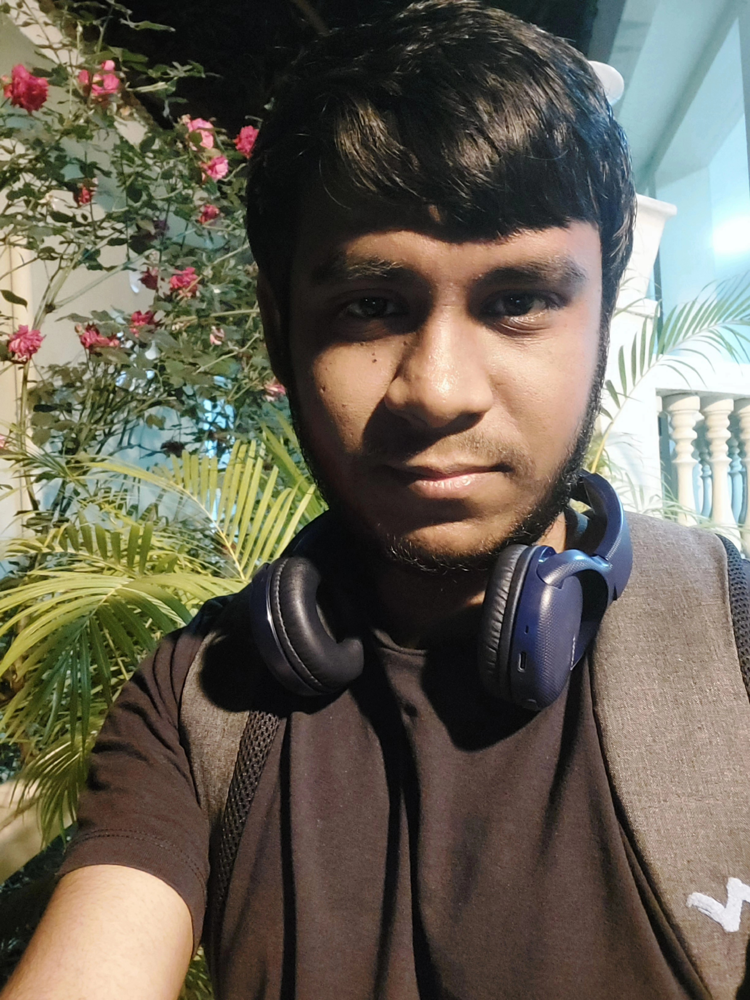

Arghan Dutta
Department of Mathematics,
Indian Institute of Science,
Bangalore-560012, India
Email: arghandutta@iisc.ac.in
Greetings, I am Arghan Dutta, presently in the concluding year of my MS program in Mathematics at the esteemed Indian Institute of Science, located in Bangalore, India. Prior to this, I successfully attained my BS degree in Mathematics from The Bhawanipur Education Society College, affiliated with the University of Calcutta, situated in Kolkata, India.
Furthermore, I hold the role of co-organizer for the Cult of Categories and Types (CoCT) seminar group at IISc, Bangalore. This engagement reflects my dedication to fostering intellectual exchange and collaborative learning within the realm of categories and types. I am also an occasional speaker at the Students' Topology and Geometry Seminar (STGS) group at IISc, Bangalore.
I am an enthusiast of Category Theory, with a specific focus on areas such as Categorical Homotopy Theory, Homotopy Type Theory, Higher Category Theory and Categorical Logic. For further insights into my background and experiences, please refer to my CV, which can be accessed through the following link.